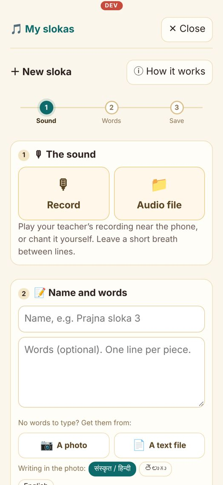
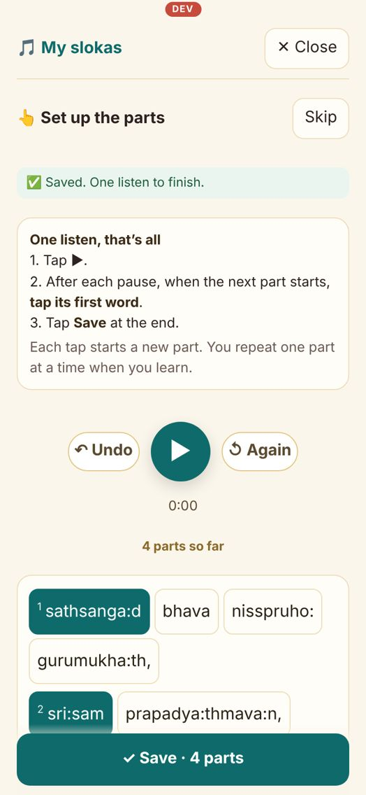
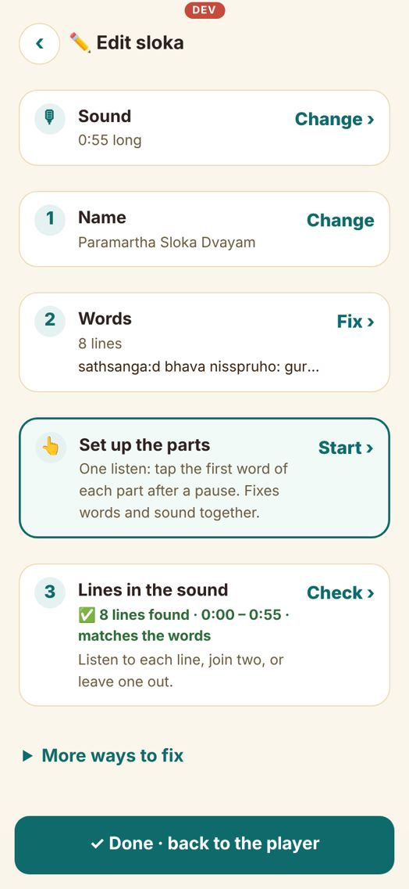
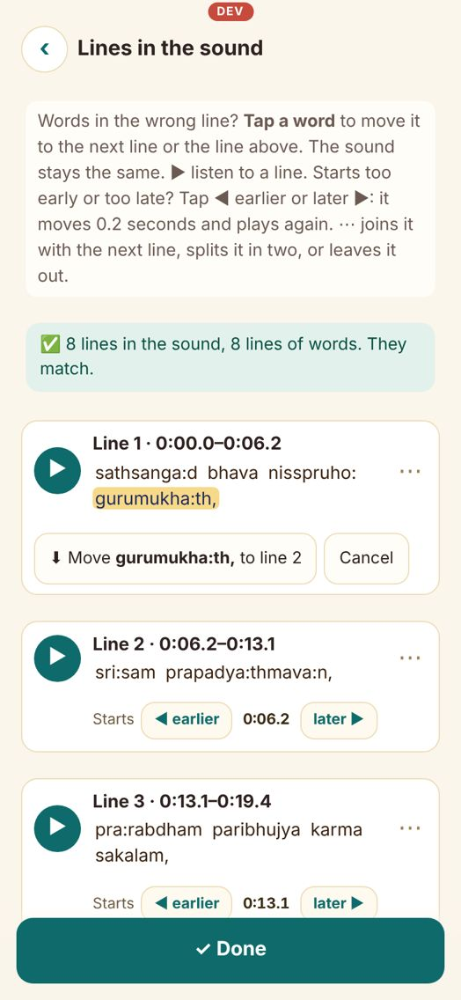
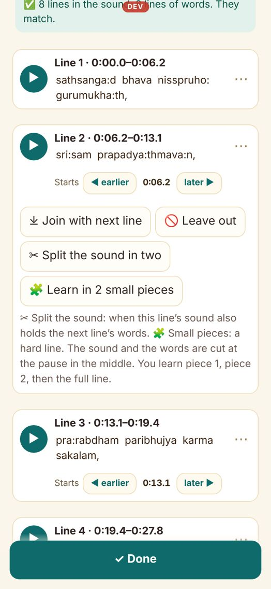
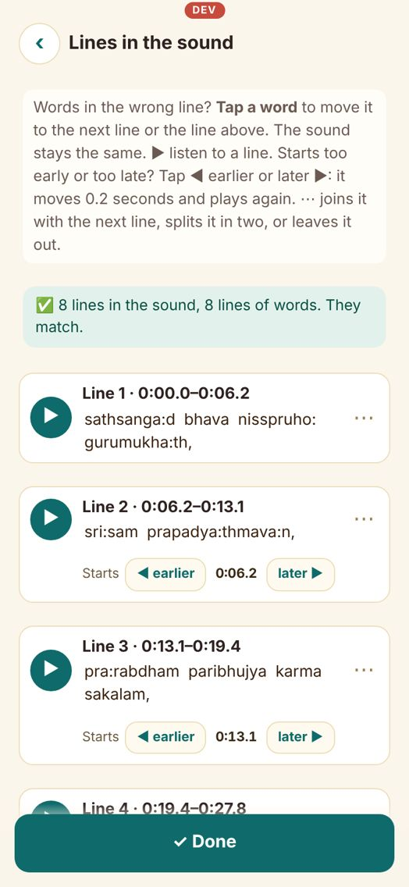

My slokas: set up a sloka
Add the sound and the words once. Then the app lets you hear and repeat one part at a time, with the words lighting up. Example used here: Paramartha Sloka Dvayam.
The one rule: type the words with one line for each breath in the recording. Where the chanter pauses, press Enter. Get the words from a book, a lyrics app or a photo, and check that no line is missing.
1Add the sloka
My slokas → ＋ Add a sloka.
• Sound: tap Record and play the recording near the phone (or chant it yourself), or tap Audio file to pick one.
• Name and words: type a name, then paste the words, one line per breath.
• Tap Save.
My slokas → ＋ Add a sloka.
• Sound: tap Record and play the recording near the phone (or chant it yourself), or tap Audio file to pick one.
• Name and words: type a name, then paste the words, one line per breath.
• Tap Save.

2Set up the parts (one listen)
This screen opens by itself after Save.
• Tap ▶. All the words are on screen.
• After each pause, when the next part starts, tap its first word. It turns green with a number.
• Tapped the wrong word? Tap it again to remove it. ↺ Again starts over.
• At the end tap Save. The words and the sound now match, one part per line.
This screen opens by itself after Save.
• Tap ▶. All the words are on screen.
• After each pause, when the next part starts, tap its first word. It turns green with a number.
• Tapped the wrong word? Tap it again to remove it. ↺ Again starts over.
• At the end tap Save. The words and the sound now match, one part per line.

3Practise
Open the sloka and tap Learn with guru: you hear part 1, say it twice, then part 2, and so on, then the whole sloka. Or just press ▶ to listen with the words lighting up.
Open the sloka and tap Learn with guru: you hear part 1, say it twice, then part 2, and so on, then the whole sloka. Or just press ▶ to listen with the words lighting up.
If something doesn't match
Open the sloka → ⚙️ → Edit sloka. The easiest fix is always: Set up the parts → Start and do the one listen again.

For small fixes, open Lines in the sound → Check. At the top it says if the lines in the sound and the lines of words match (green) or not (yellow). Under each line you see its words. Tap ▶ to hear a line.
aA word is in the wrong line (the sound is right)
Tap the word. Choose ⬇ Move to next line (moves it and the words after it) or ⬆ Move to line above (moves it and the words before it).
Example: line 1 ends with
Tap the word. Choose ⬇ Move to next line (moves it and the words after it) or ⬆ Move to line above (moves it and the words before it).
Example: line 1 ends with
gurumukha:th, but you hear it at the start of line 2 → tap gurumukha:th, → Move to line 2.

bOne line's sound has two lines of words
Tap ⋯ → ✂ Split the sound in two. The app cuts at the pause in the middle and plays it. Then check both lines.
c. Two sound lines for one line of words: tap ⋯ → Join with next line on the first one.
d. A noise or talk you don't want: ⋯ → Leave out.
Tap ⋯ → ✂ Split the sound in two. The app cuts at the pause in the middle and plays it. Then check both lines.
c. Two sound lines for one line of words: tap ⋯ → Join with next line on the first one.
d. A noise or talk you don't want: ⋯ → Leave out.

eA line starts a little too early or too late
Tap ◀ earlier or later ▶ under that line. It moves 0.2 seconds and plays again. Repeat until it starts right on the first word.
Tap ◀ earlier or later ▶ under that line. It moves 0.2 seconds and plays again. Repeat until it starts right on the first word.

fA long, hard line
Tap ⋯ → 🧩 Learn in 2 small pieces. The sound and the words are cut at the middle pause. In Learn with guru you do piece 1, piece 2, then the full line. To undo: ⋯ → Join with next line on piece 1.
Tap ⋯ → 🧩 Learn in 2 small pieces. The sound and the words are cut at the middle pause. In Learn with guru you do piece 1, piece 2, then the full line. To undo: ⋯ → Join with next line on piece 1.
Which fix when
| Words and sound are off from some line onward | Check the words: a line is often missing. Add it, then Set up the parts again. |
| A word is in the next or previous line | Tap the word → Move |
| Sound line has two lines' words | ⋯ → Split the sound in two |
| One line's words spread over two sound lines | ⋯ → Join with next line |
| Starts a bit early or late | ◀ earlier / later ▶ |
| Line too long to learn | ⋯ → Learn in 2 small pieces |
| New recording | Edit sloka → Sound → Change, then Set up the parts |